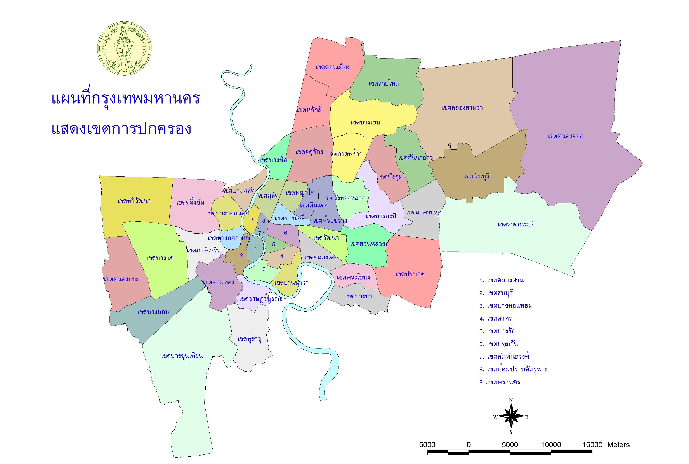

ลักษณะภูมิประเทศและภูมิอากาศ

×

กรุงเทพมหานครมีลักษณะภูมิประเทศเป็นที่ราบลุ่มแม่น้ำเจ้าพระยา
พื้นที่ส่วนใหญ่เป็นเขตเมืองและชุมชนหนาแน่น มีแม่น้ำและคลองจำนวนมาก
มีภูมิอากาศแบบมรสุมเขตร้อน แบ่งเป็น 3 ฤดู คือ ร้อน ฝน และหนาว
ฤดูร้อนอากาศค่อนข้างร้อน ฤดูฝนมีฝนตกชุก และฤดูหนาวอากาศไม่หนาวจัด
ลักษณะภูมิประเทศและภูมิอากาศเอื้อต่อการเป็นศูนย์กลางเศรษฐกิจและการคมนาคมของประเทศ